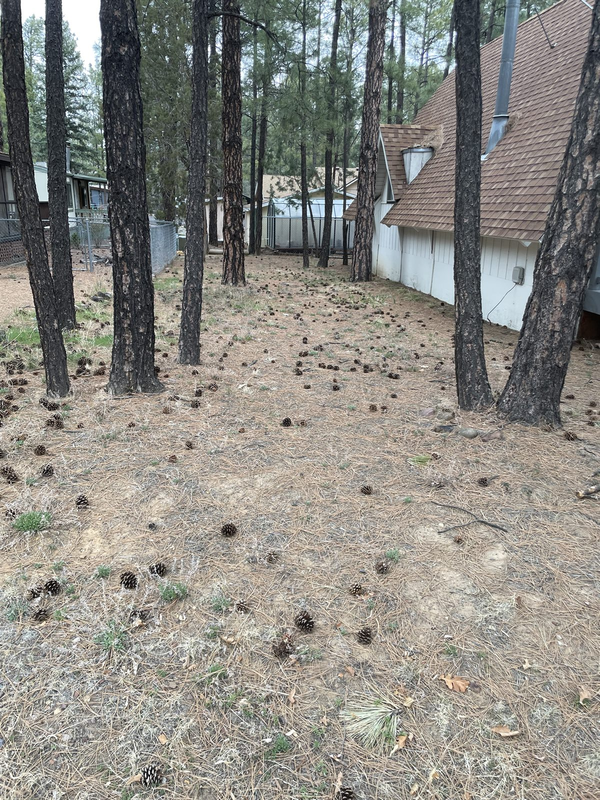
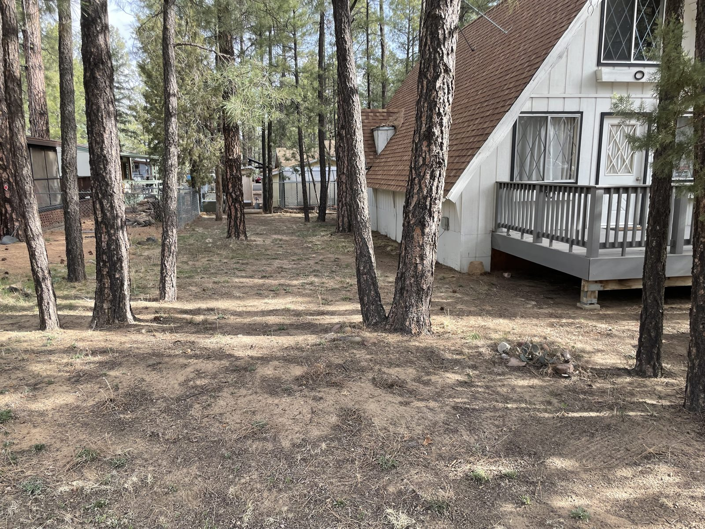
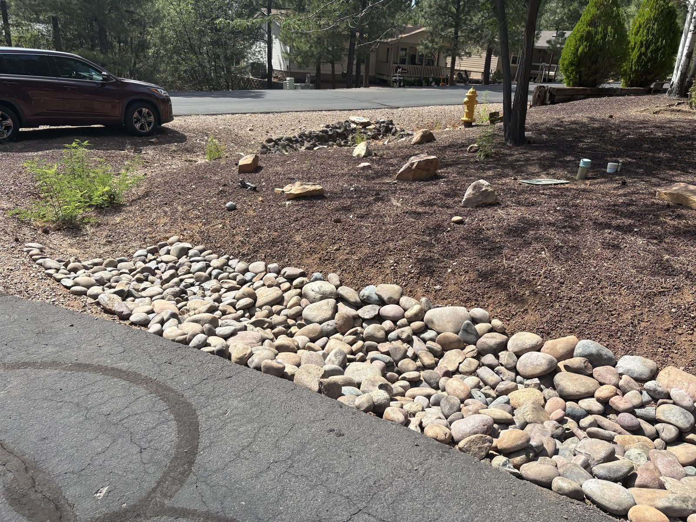
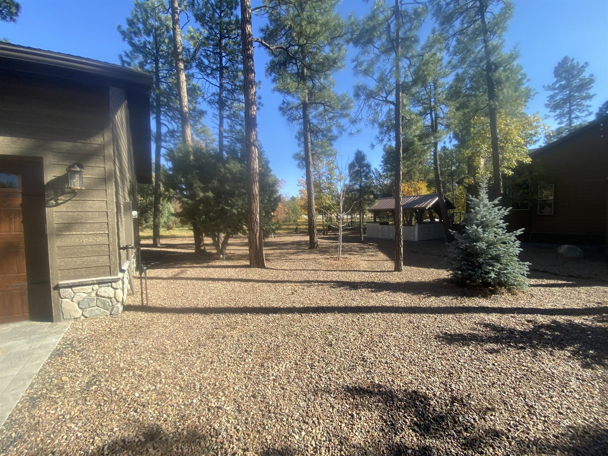
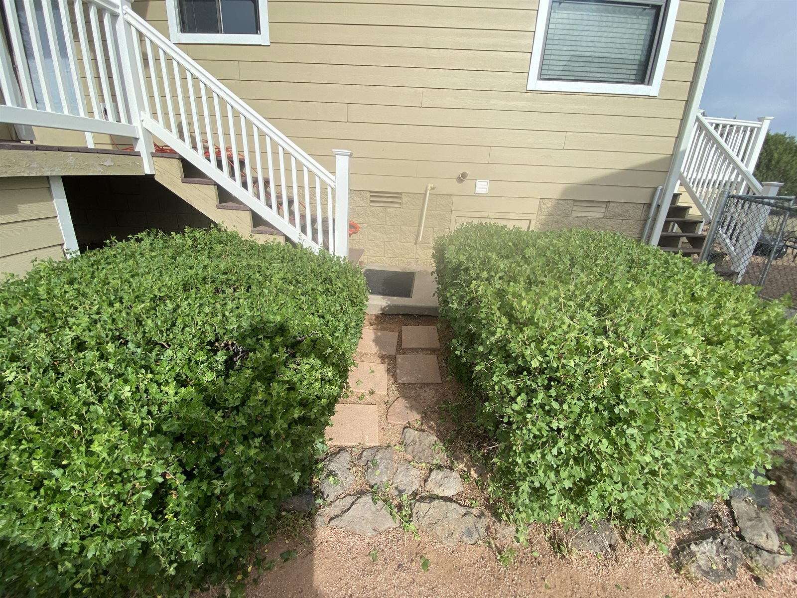
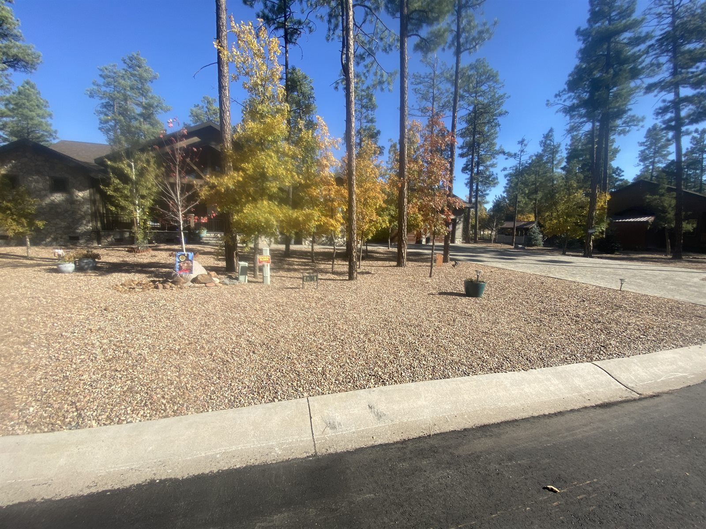
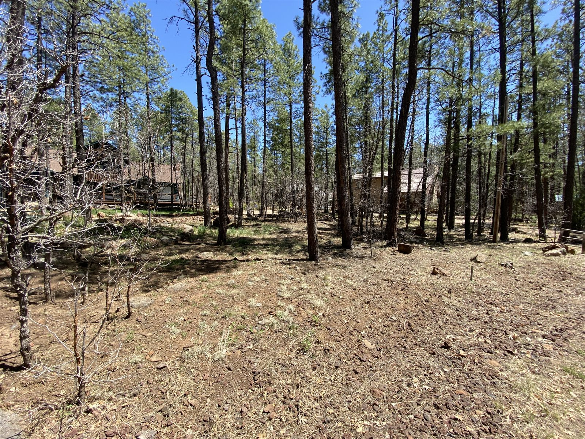
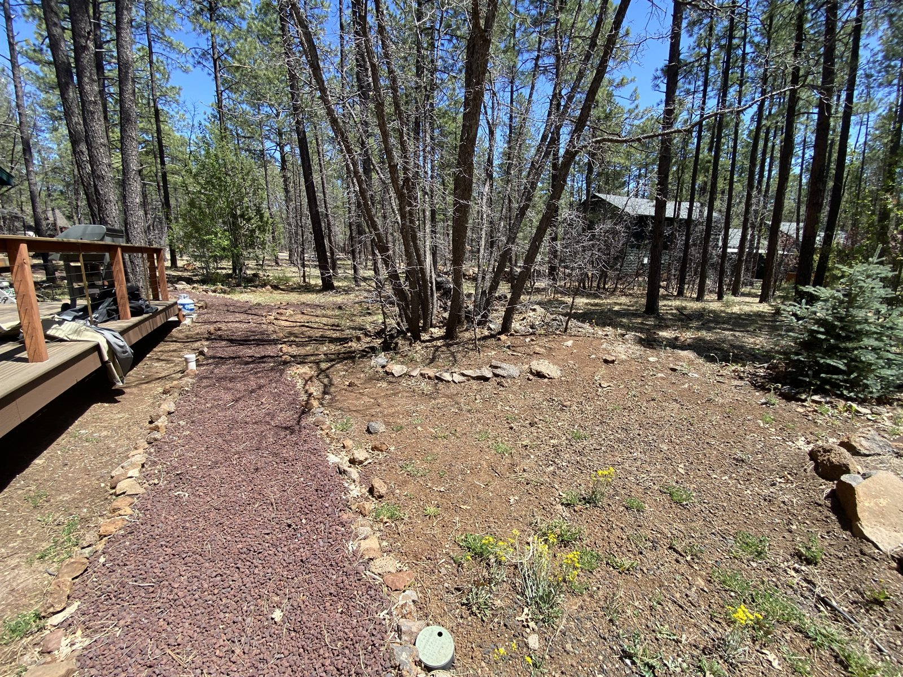
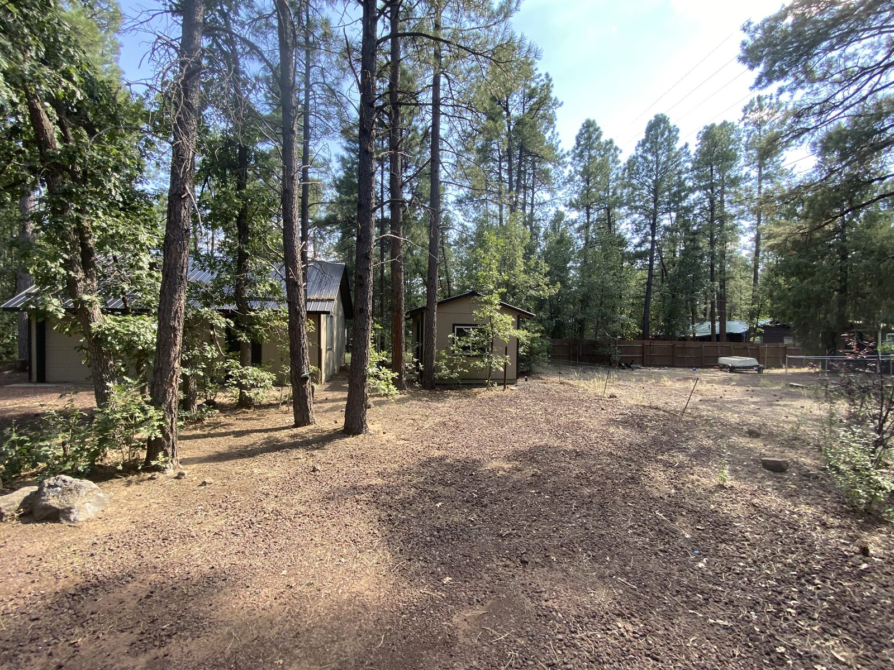

Completed projects
Real yards. Real results.
A look at cleanup, rock spreading, mowing, trimming, and property-care projects completed by our crew.
Before & after
From pine-covered to cleaned up.

Before
AfterMore completed work
Clean, practical improvements.






